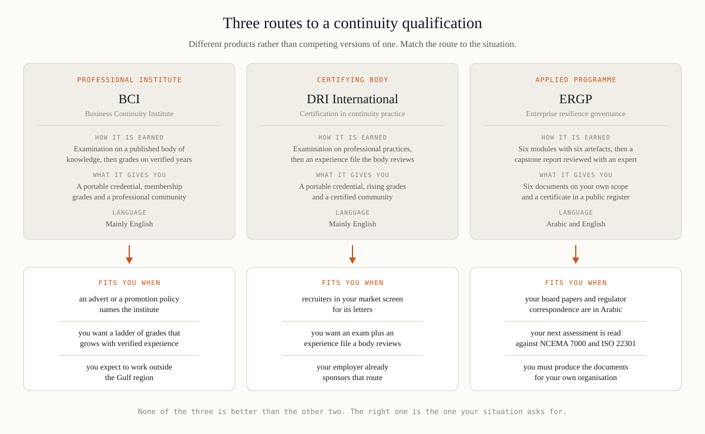

The Business Continuity Institute is a professional membership institute based in the United Kingdom. It publishes a body of knowledge for business continuity, examines candidates against it, and admits them to membership grades that rise with verified years of practice and referees. Members keep the credential alive through continuing professional development, and the institute runs chapters and events in many countries. DRI International, based in the United States, follows a similar logic with its own professional practices: a qualifying examination, an application in which experience is reviewed by the body rather than asserted by the candidate, and grades that rise from entry level to senior. Both are decades old, both are recognised far beyond their home countries, and both should be checked on their own sites, because grade names, fees and syllabuses change.
ERGP is a different kind of object. It is our own applied programme in resilience governance — an information and consulting service rather than membership of an institute. Six modules are read at your own pace, each ending in a working document for your own organisation; self-check blocks run through the material, and a capstone report on your own company is reviewed with an expert. The certificate carries a unique number in a public register. The institutes certify a person against a common body of knowledge and keep them inside a professional community; ERGP walks a manager through building the system their board and regulator will examine.
Only the attributes that change a decision.
| BCI | DRI International | ERGP | |
|---|---|---|---|
| Type of body | Membership institute, United Kingdom, decades old | Certifying body, United States, decades old | Applied programme by risk-place.org, 2026 |
| How it is earned | Examination on the published body of knowledge, then grades on verified experience | Examination on the professional practices, then an experience review by the body | Six modules, self-check blocks, six artefacts, a capstone reviewed with an expert |
| Membership and grades | Yes, grades and a member community | Yes, grades and a certified community | No membership, no grades, no chapters |
| Language | Mainly English; ask the institute about others | Mainly English; ask the body about others | Fully in Arabic and fully in English |
| Regulatory layer | International good practice, standard-neutral | International practices, standard-neutral | NCEMA 7000, central bank expectations and ISO 22301 read as one system |
| What you keep | A portable credential and a grade path | A portable credential and a development record | Six documents on your own scope, plus the certificate |
| Recognition by recruiters | Broad and international | Broad and international | New, regional first, still being built |
| Staying valid | Continuing professional development | Continuing education | Three years, renewed on evidence of practice |
There are situations in which an institute route is plainly the stronger buy, and pretending otherwise would cost you money and cost us any claim to be useful. Take one when a job advert or a promotion policy names the institute or its letters: a screening rule cannot be argued with, only satisfied. Take one when you expect to work across several countries, because an institute grade is a common currency between employers who have never heard of any provider. Take one when you want a ladder rather than a course, since grades that rise with verified experience give a career a structure across a decade that no programme offers. Take one when the community is part of what you are buying — chapters, conferences, peers, mentors. And take one when your employer already sponsors that path, because a credential the organisation understands is easier to renew.
ERGP was built for a narrower situation. The first difference is language: the whole programme exists in Arabic — all six modules, the questions and the templates, not a translated summary. When board papers and regulator correspondence are in Arabic, the material converts into work far faster. The second is the regulatory layer. AE/SCNS/NCEMA 7000, the central bank's operational resilience expectations and ISO 22301 are read as one management system rather than three separate courses, which is what an assessment here asks of you. NCEMA is the regulatory context the material is mapped to; it accredits no course, ours included. The third is what leaves with you — six documents on your own scope, from a business impact analysis to a board report, instead of slides. The fourth is verification, a unique number in a public register. The modules and the artefacts are listed on the ERGP programme page.
Now the other side of the same page. ERGP has no decades behind it and no international institute: no chapters, no grades, no letters after your name, no community for life. Recognition is regional and still being built — a recruiter in London or Singapore knows what BCI and DRI letters mean and does not yet know ours, and if your CV has to survive automated screening in those markets, that fact alone decides the question. The certificate is issued by a private provider, not by a membership body or a public authority, so its weight rests on the work it records; it belongs in a compliance file as a competence record, not as a licence. We would rather you read that here than discover it later. If the line on the CV is what you need, take the institute route.

Ranking these three on a single scale is marketing rather than analysis, because they answer different questions. The institutes answer how the profession recognises you. Ours answers whether you can build and defend the system a regulator and a board will examine, in the language in which that happens. Anyone who calls one of the three simply better — ourselves included — is selling.
If the applied route is the one your situation asks for, the programme page lists the six modules, the artefacts you keep and the register. Read it and decide for yourself.
See what ERGP covers